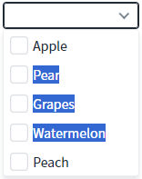
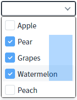
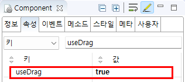

CheckCombobox의 'useDrag' 속성을 사용하여, 항목을 마우스로 드래그하여 선택할 수 있도록 설정한 예제입니다. 이 속성을 'true'로 설정하면 기능이 활성화됩니다.
기본
항목을 마우스로 드래그하여 선택하기
예제 영역 '(기본 설정) 마우스 드래그를 통해 항목 선택 불가'에 구성된 CheckCombobox의 목록 위에서 선택 항목을 마우스로 드래그합니다. 항목의 문자열이 선택됩니다.Image 1.브라우저(Chrome) 실행 예시 - 기본 동작 - 마우스 드래그로 항목이 선택되지 않는 상태

예제 영역 '마우스 드래그를 통해 항목 선택 가능'에 구성된 CheckCombobox의 목록 위에서 선택 항목을 마우스로 드래그합니다. 항목이 선택됩니다.Image 2.브라우저(Chrome) 실행 예시 - 마우스 드래그로 항목이 선택된 상태

1
속성을 정의합니다.
[필수] useDrag="true"
(설명)
항목 선택 시 마우스 드래그 허용 여부. 기본 값은 false 입니다.
Image 3.웹스퀘어 스튜디오의 Component View 예시

Example 1.Source
<!-- CheckCombobox의 소스 본문 예시 --> <xf:checkcombobox useDrag="true"> <!-- 중략 --> </xf:checkcombobox>
useDrag